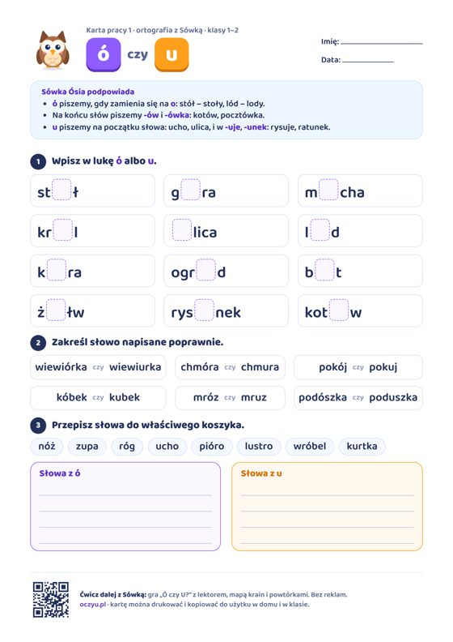
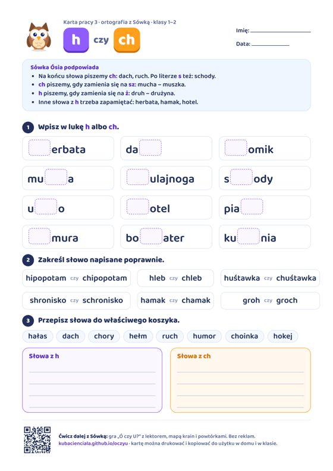
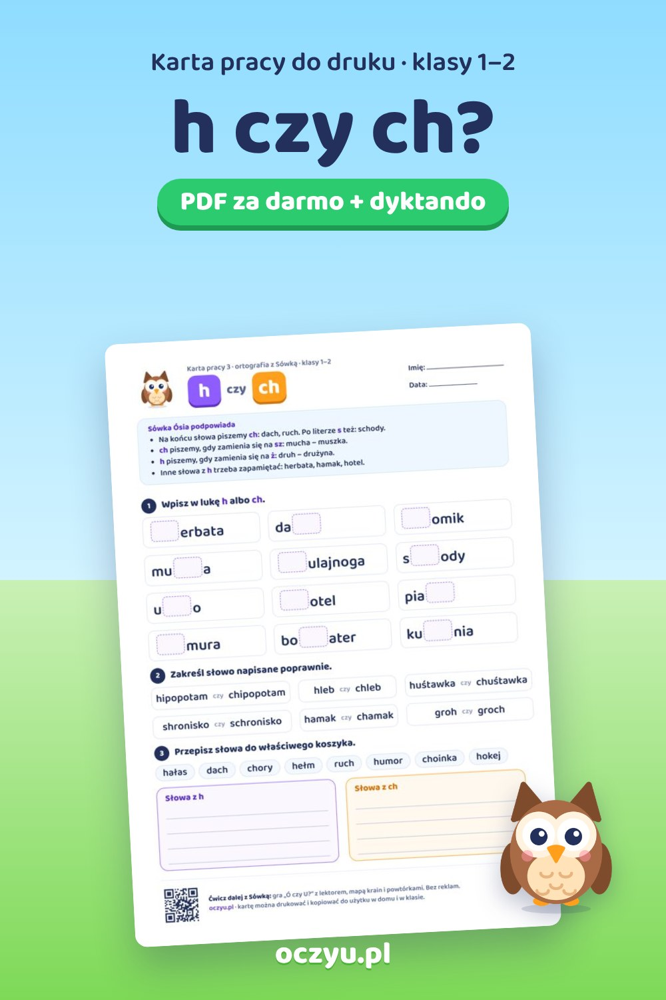
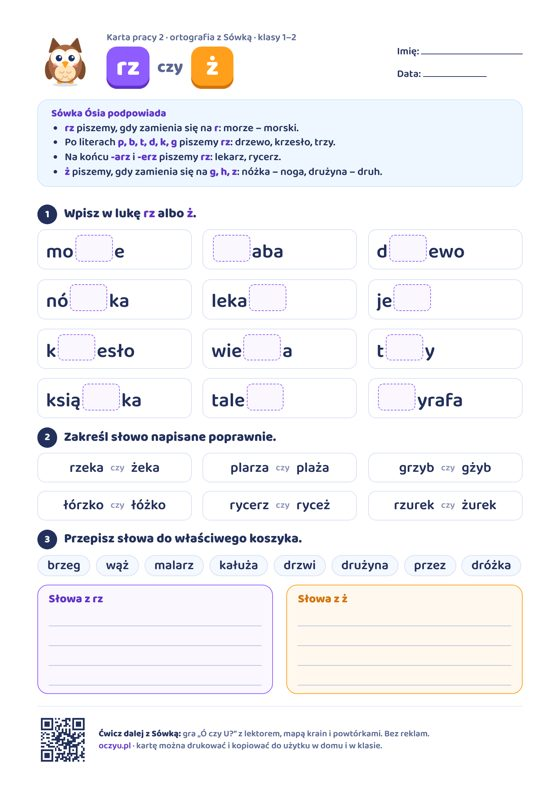
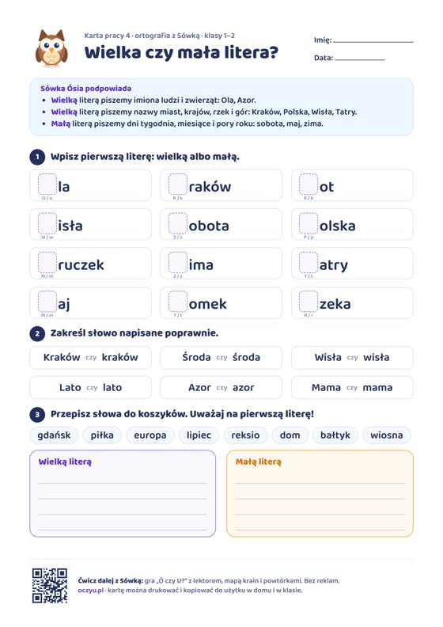
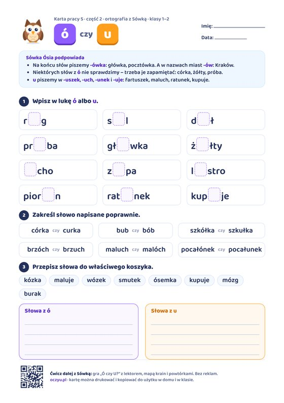
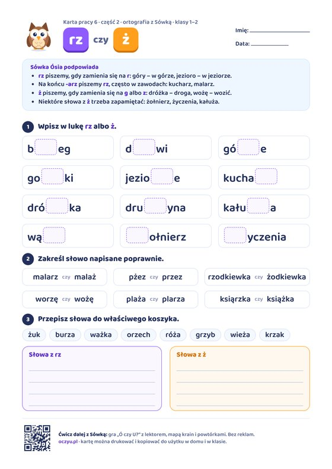
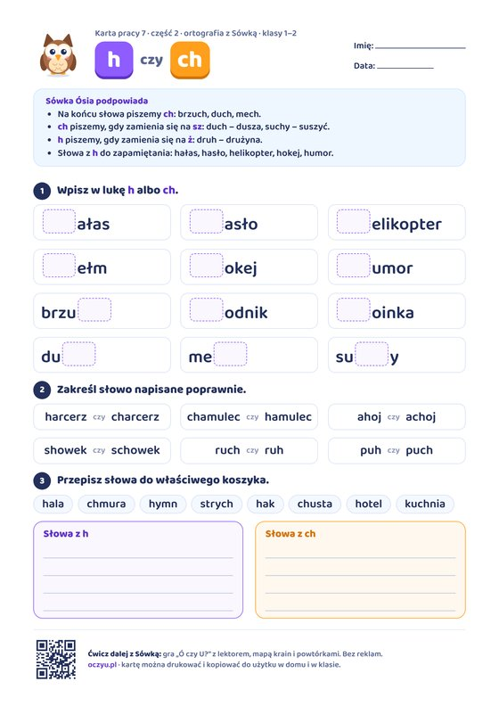
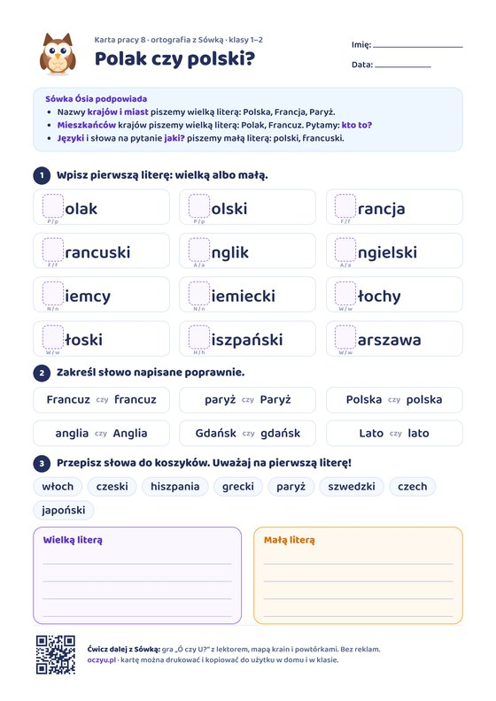

Ó czy u?
Ó wymienne, -ów, u na początku i w -uje. Słowa: stół, góra, mucha, król, ulica…
Pobierz PDF
Darmowa karta pracy z ortografii dla klas 1–2: ch na końcu, ch wymienne na sz, h na ż. Trzy strony A4 do wydruku – ćwiczenia, dyktando z rysunkiem i odpowiedzi dla dorosłego.
Kartę możesz drukować i kopiować w domu i w klasie.

Ta grafika jest gotowa do zapisania na Pintereście albo udostępnienia w grupie nauczycieli – prowadzi prosto do tej strony.
herbatahulajnogahotelbohaterhipopotamhuśtawkahamak
dachchomikmuchaschodyuchopiachchmurakuchniachlebschroniskogroch
W grze „Ó czy U?” dziecko przeciąga słowa do koszyków, lektor czyta każde słowo, a trudne słowa wracają w powtórkach. Ponad 170 słów na mapie krain, bez reklam i bez zbierania danych.

Ó wymienne, -ów, u na początku i w -uje. Słowa: stół, góra, mucha, król, ulica…
Pobierz PDF
Rz wymienne, rz po p b t d k g, -arz i -erz. Słowa: morze, żaba, drzewo, nóżka, lekarz…
Pobierz PDF
Imiona, miasta, kraje, dni i miesiące. Słowa: Ola, Kraków, kot, Wisła, sobota…
Pobierz PDF
Ó niewymienne, -ówka, -uszek i -uje. Słowa: róg, sól, dół, próba, główka…
Pobierz PDF
Rz wymienne na r, -arz, ż wymienne na g i z. Słowa: brzeg, drzwi, górze, gorzki, jeziorze…
Pobierz PDF
Ch na końcu i wymienne na sz, h do zapamiętania. Słowa: hałas, hasło, helikopter, hełm, hokej…
Pobierz PDF
Kraje, miasta, mieszkańcy i języki. Słowa: Polak, polski, Francja, francuski, Anglik…
Pobierz PDF